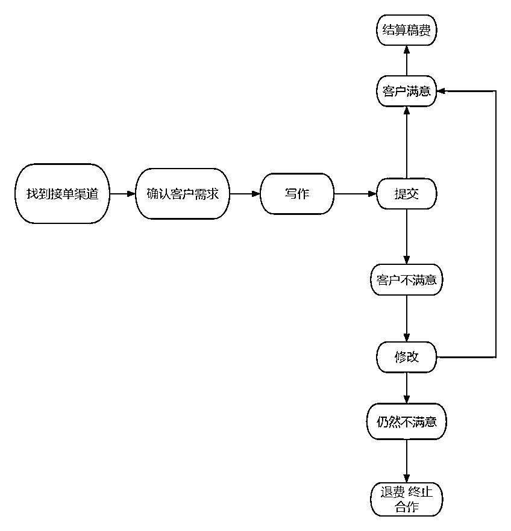

来源：https://lv9qj6hfr4z.feishu.cn/docx/T6mzdAaymo1Je8x4EPjcO4YDnfg
整体思路和变现流程
此前，我在传统写作行业中已经工作了四年，23年二月之后开始实行AI写作变现，摸爬滚打中我也取得了一些不错的成绩。在此，我不仅想总结回顾一下自己在这个领域中获得的成就，也想把自己的对于AI写作变现的思考汇聚成力量带给更多人我相信通过gpt写作赚钱的人有很多，像生财里很多人都是通过自媒体来变现的，但我曾经真的完全是一个自媒体小白，之前也在自媒体上面发表过一些相关的文章，但是收效甚微。我专注的项目就是直接服务私域客户，直接为我们的甲方或者中介服务，从而赚取稿费。当然，自从今年搭上了AI这个大风口，与往年相比，我在同样的时间和精力投入下，收入翻了三倍以上！
我们的整体思路其实很简单：
找到接单渠道——确认客户需求——写作——变现
首先是要找寻渠道接单，然后与客户确认写作需求，利用AI完成稿件，提交给客户，从而达成变现。流程图如下。

在我这几个月带学员实操陪跑的过程中，遇到的最大的问题就是很多学员读不懂客户的需求，写出来的东西。驴唇不对马嘴 我认为一个好的高质量稿子，最重要的就是一定要符合客户的预期，客户让你往东写，你不能往西写，除非是特别特别原则上以及专业上的错误，可以向客户指点出来。因此，前期的很多关键性文体的专业知识是要通过自己的学习来打下基础的，例如一篇论文，第一章一定要写的是绪论 研究背景，研究意义，文献综述等 你不能第一张去写现状。 再例如写一篇市场调研报告，特定的数据是必须得有的。一篇市场调研报告没有数据，就是鬼扯。在满足此文体特有的专业性的内容的基础上，再按照客户想要的方向去不断的磨合完善 是必须要做的。
很多学员犯了一个很低级的错误，他们太依赖于AI了，客户给了要求，给了标题就直接去写了一点数据，不看一点相关文献，不看用AI胡乱生成一篇出来就提交了，明眼人一看就能看出来是AI写的 不管是什么文章，网上都要是基于前人的著作和文献来支撑，才能写出我们的文章。 一直很喜欢一句话叫做天下文章，一大抄，看你会抄不会抄。 拿到题目之后一定要去门扇平台搜索相关的数据，以及之前的作者是如何进行写作和调研的，把好的句子有用的部分摘抄下来，再加以润色修改，调整结构就可以形成我们的新的文章，对于很多文案和文章来说，这是最简难的写作方法。
当然，框架一直是我强调的最多的东西， 一个框架是一个文章的基调。对于很多工作性质的文章来说，结构很清晰，明了的只要根据客户或者文件需求来加以制作框架，再填充内容就好。到这里就有很多人来问我了，不知道框架怎么写呀？不懂呀，之前没写过呀。
不懂，你不会去看吗？所以要搭配到之前跟你们提到的文献，查找去扩充自己的知识面去生成制作一个完整的框架，也就是我们的大纲
常见的工作性文章的大纲 无非就是先概述自己的一些现状，然后提出相对应的问题，再根据问题一一对应提出解决方案
像一些征文类，需要一些辞藻华丽，语句优美的句式来加以完善。 像学生的征文也是有理有据，有论点论证的，再简单些，像一些口水的小学生文章 或者应付老板的一些文章，其实AI直出加以润色修改就行，因为AI的逻辑性本身就很强。 但是大纲我建议 一定要多阅读文献 去模仿人家的框架加以润色最妙。
AI直接写出来的文章改都不如改，就能拿去提交给客户了？？
怎么可能嘛？在想什么嘛？
目前有这么简单吗？要是这么简单，那我不是早就成百万富翁啦？都有AI了，还要我们人类干什么？
AI写出来的文章有一些短篇文章确实做少量修改，可以提及直接提交，前提是他写的特别好，你看的特别顺眼，但是很多文章一定要去去除强烈的AI痕迹，例如，总结性的话术（文中出现的这些怎么怎么样？总而言之，怎么怎么样）还有一些特别强烈的连接词，例如（首先，其次，再次，最后，同样，此外）
最近发现一个问题，就是AI还特别喜欢用不仅，而且这样的句式全文都是不仅，而且不仅，而且。就很烦 。一定要删除或者合并润色的是一个人类能读通顺的，看起来没有那么的机械感的文章，再去提交给客户。
定价的时候不要玻璃心，不要嫌烦，一定要一定要和客户沟通清清楚楚，明明白白划分好责任之后再去报你的价格，一是可以体现出专业性，二是避免自己出现信息失真导致的亏本现象
举个栗子
昨天遇到一个学员，说是要写脚本，报了200块钱就去屁颠儿屁颠儿的给客户写脚本去了，写完之后才发现客户要的是APP小程序，脚本根本就不是剧本脚本，真的是给人笑死了啊，哈哈哈哈 因此 一定要问清楚需求，例如写多少字，多久要做，不做图表，后续包不包修改不同的需求报价肯定是不一样的，收钱之前一定要划分好责任，之后再去收钱，反复的跟客户强调好，不要等到后续处理不来了，或者是客户这不满意，那不满意了开始头疼。
什么叫阶梯式报价？
大白话来讲，就是针对一个同样的单子，但是质量要求不同或者是责任划分不同，由低向高来报价 比如只写稿子，不管后续修改到100，修改一次报200 以此类推 ，这是我多年实操经验得到的最好的报价模式，一是杜绝了一些，因为一看价格好高，就望而却步的客户就跑了的情况 二是这种明确的划分责任后同时也可以避免掉一些想白嫖你的客户 有的客户给那么一点点点点钱，就想让你给他包过修改100次，也要你包过，怎么可能呢？我们的时间是很值钱的。不要做低眉顺眼的打工者，我们是为自己工作，要让自己的时间值钱起来，不能无限制的满足这些无赖客户的需求。
闲鱼作为一个二手交易平台，提供了丰富的流量资源和多样的营销工具，是推广和销售的重要渠道。通过合理利用闲鱼的签到任务、对标功能、超级曝光、急速卖等工具，可以大大提升商品的曝光率和销售机会。在闲鱼上，每天的签到和任务可以提高账户的活跃度，让你的商品更容易被潜在买家看到。而通过刷对标和卖同款，可以借鉴其他热销商品的文案和卖点，优化自己的商品描述，提高吸引力。发布商品时，要有规律性和持续性，保持每天的活跃度。合理使用闲鱼的曝光工具，如超级曝光和急速卖，可以在关键时间点大幅增加商品的曝光量，吸引更多买家关注。闲鱼的降价功能可以有效刺激买家在短时间内做出购买决策，提高成交率。结合这些功能，你可以在闲鱼上实现更好的销售业绩。通过这些温暖细致的日常运营动作，你可以在闲鱼平台上保持账户的活跃度，增加商品的曝光率，从而提升销售业绩。记得根据自己的实际情况调整这些动作的时间和频率，找到最适合自己的节奏，让运营变得更加轻松愉快。
中介单有时候确实很烦，因为单价比较低，事情又比较多，但是长期稳定有效，而且可以减少很多谈单过程中不必要的不内耗 ，我就有两三个特别稳定的中介，每年持续给我工单淡季的时候，我也不怕被饿死。
至于这些中介怎么找？
一是可以混迹各大写作群去主动链接合作
二是可以去面试，成为淘宝洗手间，然后去筛选优质的店铺和中介
其实很多人羞于做销售，羞于促销，但是酒香也怕巷子深，你不让大家知道你是干什么的，人家怎么会找你复购呢？怎么会找到你呢？
学会发优质的朋友圈，对于打造私域十分的重要，不是无脑的发广告，这是对于促销来说十分重要的一点，我更倾向于通过高质量的服务来树立一个专业性的人设，然后发一些生活性的日常，穿插着一些我们的业务，这样子的嗯于客户的接受度是更好的，想学习如何发优质的朋友圈，也可以找我链接之前写过一个特别完整的课件 希望对其他人有帮助
人多量大的情况下，你可以适当的降价，比如说两个人9折，三个人88折 另外，也可以开辟分红模式，基本上给我转介绍的客户都会慷慨的分，他们10到20个点。